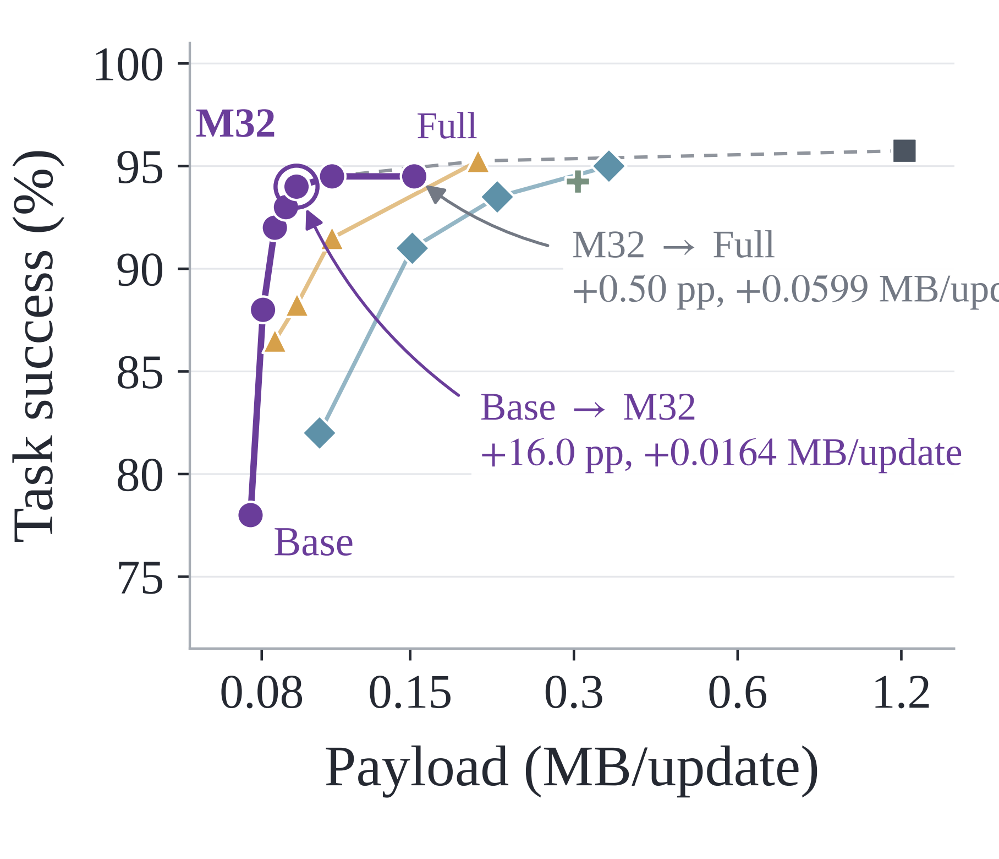
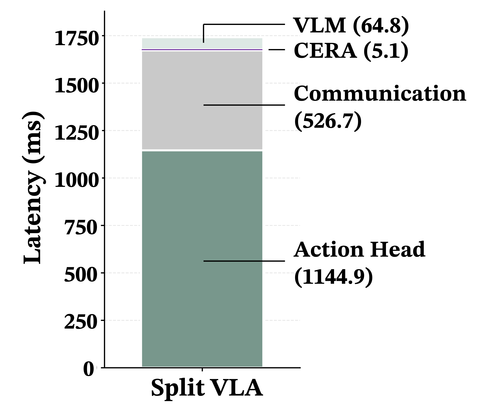

01
Plug-and-play split interface
Compresses the cloud-to-robot conditioning representation while preserving the pretrained VLM, action head, and original input pathways.
Anonymous Institution
Compresses the cloud-to-robot conditioning representation while preserving the pretrained VLM, action head, and original input pathways.
Retains a compact base code for every unit and adds selective refinement under an adjustable budget M.
Uses offline marginal action utilities to prioritize the refinements that best preserve downstream actions.
CERA reorganizes the VLM output into interface units and encodes each unit into a base code and a refinement code. At inference, the cloud computes an action-calibrated priority for every unit, transmits all base codes and up to M selected refinements, and the robot reconstructs the native representation before local action generation.

CERA achieves substantial communication reduction while maintaining task success close to the original full-resolution VLA model.
| Method | Payload ↓ | Reduction ↑ | Success ↑ |
|---|---|---|---|
| Raw | 1.217 MB | 1.0× | 95.75% |
| Quantization (INT8) | 0.305 MB | 4.0× | 94.25% |
| Token Pruning | 0.217 MB | 5.6× | 93.50% |
| Uniform AE | 0.093 MB | 13.1× | 88.25% |
| CERA (Ours) | 0.093 MB | 13.1× | 94.00% |
| Method | Payload ↓ | Reduction ↑ | Success ↑ |
|---|---|---|---|
| Raw | 2.859 MB | 1.0× | 83.75% |
| Quantization (INT8) | 0.933 MB | 3.06× | 80.50% |
| Token Pruning | 0.550 MB | 5.20× | 72.75% |
| Uniform AE | 0.275 MB | 10.38× | 61.00% |
| CERA (Ours) | 0.276 MB | 10.38× | 80.50% |

| Location | Component | Latency (ms) |
|---|---|---|
| Cloud | VLM | 64.8 (3.72%) |
| CERA Encoder | 0.5 (0.03%) | |
| CERA Scorer | 2.0 (0.11%) | |
| Network | Communication | 526.7 (30.24%) |
| Edge | CERA Decoder | 2.6 (0.15%) |
| Action Head | 1144.9 (65.74%) | |
| Total E2E | 1741.5 | |